Geometria
1) Ângulos em retas paralelas
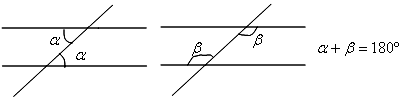
2) Triângulos
• Classificação:
Equilátero ⇔ 3 lados iguais.
Isósceles ⇔ 2 lados iguais.
Escaleno ⇔ 3 lados desiguais.
• Ângulos:
A soma dos ângulos internos de um triângulo é igual a 180º.
A soma dos ângulos externos de um triângulo é igual a 360º.
• Segmentos e pontos notáveis:
Mediana ⇔ liga um vértice ao ponto médio do lado oposto.
Baricentro ⇔ é determinado pelo encontro das medianas.
Bissetriz interna ⇔ liga um vértice ao lado oposto, dividindo os ângulos em dois iguais.
Incentro ⇔ encontro das bissetrizes internas.
Mediatriz ⇔ reta perpendicular a um lado em seu ponto médio.
Circuncentro ⇔ encontro das mediatrizes.
Altura ⇔ liga um vértice ao lado oposto - e é perpendicular a ele.
Ortocentro ⇔ encontro das alturas.
• Casos de congruência de triângulos:
LAL ⇔ lado, ângulo e lado.
ALA ⇔ ângulo, lado e ângulo.
LLL ⇔ lado, lado e lado.
LAAO ⇔ lado, ângulo e ângulo oposto.
• Casos de semelhança de triângulos:
AA ⇔ ângulo e ângulo.
LAL ⇔ lado, ângulo e lado.
LLL ⇔ lado, lado e lado.
3) Polígonos
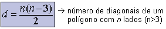

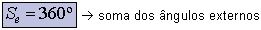

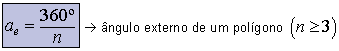
4) Triângulo retângulo
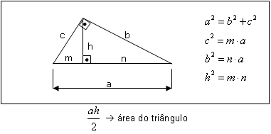
5) Triângulo qualquer
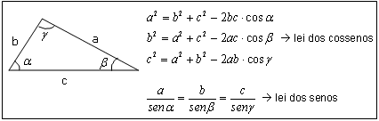
6) Circunferência
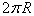⇔ comprimento de uma circunferência de raio R.
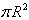⇔ área de um círculo.
7) Áreas
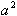⇔ área do quadrado de lado a.
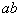⇔ área do retângulo de lados a e b.
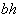⇔ área do paralelogramo de base b e altura h.
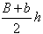⇔ área do trapézio de base maior B, base menor b e altura h.
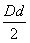⇔ área do losango de diagonais D e d.
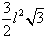⇔ área do hexágono regular de lado .

 • Em meio ao Enciclopedismo e ao Iluminismo, a literatura barroca foi perdendo espaço para a literatura de inspiração neoclassicista-árcade. O nome Neoclassicismo justifica-se pelo fato de os autores do período revitalizarem a poesia clássica;o nome Arcadismo justifica-se pelo fato de os escritores fazerem referência ao mundo campestre e bucólico da Arcádia, nome de uma província da antiga Grécia tida por poetas neoclássicos como o lugar ideal.
• Em meio ao Enciclopedismo e ao Iluminismo, a literatura barroca foi perdendo espaço para a literatura de inspiração neoclassicista-árcade. O nome Neoclassicismo justifica-se pelo fato de os autores do período revitalizarem a poesia clássica;o nome Arcadismo justifica-se pelo fato de os escritores fazerem referência ao mundo campestre e bucólico da Arcádia, nome de uma província da antiga Grécia tida por poetas neoclássicos como o lugar ideal.
 a matriz soma
será .
a matriz soma
será .


 a partir da reação de 1 mol de e 1 mol de .
a partir da reação de 1 mol de e 1 mol de .